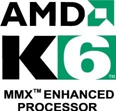
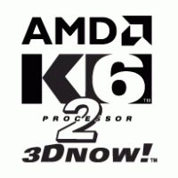
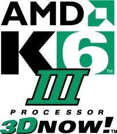
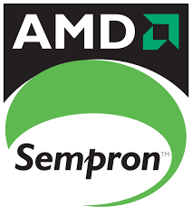
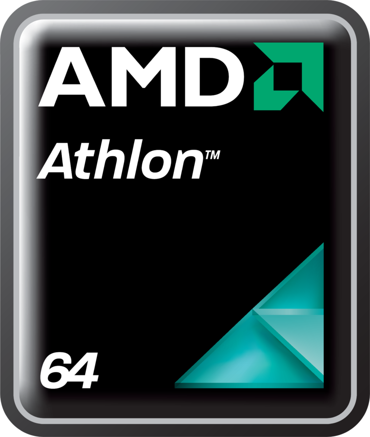

El K6 era un microprocesador lanzado en 1997 por AMD. Fue diseñado para funcionar en placas base socket 7, compatibles con las que usaban los procesadores Pentium de Intel. Era presentado como una competencia para los procesadores Pentium II. La principal ventaja competitiva del K6 con respecto a la oferta de Intel era su precio, bastante más barato que el Pentium II, e incluso que el Pentium MMX, al que superaba en prestaciones. Tuvo una importante aceptación en el mercado, presentando a AMD como un rival de peso frente al monopolio que ostentaba Intel en el mercado. Su sucesor fue el microprocesador K6-2. En cuanto a potencia bruta, comparando sus prestaciones en la ejecución de software de 16 bits, no había grandes diferencias con sus competidores. En cuanto a aplicaciones de 32 bits, resultaban más potentes el Pentium Pro y el Pentium II, quedando el K6 en un punto cercano a estos dos y muy por encima del Pentium MMX, e incluso del Cyrix 6x86. En cálculos en coma flotante, fundamentales para los videojuegos 3D de la época, el K6 quedaba por debajo del Pentium II, pero por encima del Pentium MMX. El K6 contaba con una gama que iba desde los 166 hasta 300 MHz, e incluían el juego de instrucciones MMX, que ya se habían convertido en estándar.
El K6 original fue diseñado como un competidor para el levemente más viejo y significativamente más costoso Intel Pentium II. El funcionamiento de los dos procesadores era muy similar, aunque con matices: el K6 tenía un rendimiento similar para usos generales, pero el producto de Intel era claramente superior en las tareas de coma flotante. El K6-2 fue el primer procesador de AMD en introducir un conjunto de instrucciones de coma flotante SIMD (llamado 3DNow! por AMD), que podía mejorar sustancialmente el rendimiento de las aplicaciones 3D y podía poner al K6-2 a la par, e incluso por encima del rendimiento del Pentium II en aquellas aplicaciones que las aprovecharan. 3DNow! llegó al mercado con anterioridad al conjunto de instrucciones SSE de Intel. Casi todos los K6-2 fueron diseñados para utilizar placas madre de 100 MHz con socket Super 7, esto proporcionó un alza importante en el rendimiento del sistema. Rápidamente en la carrera del K6-2, el modelo K6-2 300 MHz fue el mejor en ventas. Se estableció una excelente reputación en el mercado y compitió con el Intel Celeron 300A en el ámbito doméstico. Estos Celeron, los primeros en el mercado, ofrecían una caché más pequeña e incluso inexistente, manteniendo la potente unidad de coma flotante de su hermano mayor, el Pentium II; el K6-2, por su parte, ofrecía un acceso a la RAM más rápido (gracias a la placa madre Super 7) y las extensiones gráficas 3DNow!. AMD lanzó con posterioridad una serie de K6-2 más rápidos, los más vendidos fueron los de 350, 400, 450 y 500 MHz. En el momento en que los 450 y 500 eran los más rápidos y nuevos, tomaron el mercado de alto rendimiento y todavía competían con los Celeron, pero en la categoría de procesadores de bajo presupuesto. Las placas madre de 100 MHz del K6-2 permitían que soportara los multiplicadores cada vez mayores de la CPU y seguían siendo los más competitivos del mercado, superando en relación precio/calidad a los Celeron y -con mayor diferencia- a los Pentium II. El K6-2 fue un procesador muy exitoso y proveyó a AMD con la base del marketing y la estabilidad financiera necesaria para introducir al mercado el AMD Athlon.
 El K6-III, nombre código "Sharptooth", fue un microprocesador x86 manufacturado por AMD. Fue el último y el más rápido de todos los procesadores para plataformas de Socket 7. Fue lanzado el 22 de febrero de 1999, con modelos de 400 y 450 MHz. En el momento de su lanzamiento, el procesador de escritorio más rápido disponible de Intel hasta esa fecha era el Pentium II de 450 MHz. Sin embargo, el K6-III también compitió contra la línea "Katmai" de Pentium III, lanzada pocos días después, el 26 de febrero. Los CPU "Katmai" alcanzaron velocidades de 500 MHz, ligeramente más rápidos que el K6-III de 450 MHz. El desempeño del K6-III fue mejorado significativamente con respecto al del K6-2 gracias a la adición de un caché L2 en el chip (on-die) que corría a velocidad de reloj completa. Cuando estaban equipados con un caché L3 de 1 MB (en la tarjeta madre), los K6-III de 400 y 450 MHz podían emparejar casi completamente el desempeño del más caro Pentium III "Katmai", en sus modelos de 450 y 500 MHz respectivamente. El K6-III de 450 MHz era a veces promocionado, especialmente en Internet, como el primer procesador de AMD en superar el mejor modelo ofrecido por Intel. Sin embargo, esto es una aclamación difícil de soportar, por dos razones principales: En primer lugar, aunque el lanzamiento oficial del K6-III precedió al del más rápido Pentium III, la fecha de disponibilidad real en el mercado pudo haber venido levemente más tarde; en segundo lugar, el desempeño del procesador a través de diferentes arquitecturas no es perfectamente escalar, y así, aunque el Pentium II de 450 MHz se desempeñó más lento en ciertas áreas, era más rápido en otras.
El Sempron es una categoría de microprocesador de bajo costo con arquitectura X86 fabricado por AMD. El AMD Sempron reemplaza al procesador Duron siendo su principal competidor el procesador Celeron de Intel. Las primeras versiones fueron lanzadas al mercado en agosto de 2004. Las versiones iniciales de este procesador si estaban basadas en el núcleo Thoroughbred/Thorton del Athlon XP, con una caché de segundo nivel de 256 KiB y un bus de 333 MHz (FSB 166 MHz). Su índice de prestaciones relativas (PR) se situaba entre 2400+ y 2800+ dependiendo del modelo, aunque el índice no es calculado de la misma forma que para los Athlon XP, siendo los Sempron algo más lentos a mismo índice de prestaciones relativas. Posteriormente el Sempron se basó en el núcleo Barton del Athlon XP. Esta versión tenía un índice de prestaciones relativas de 3000+ y poseía una caché de segundo nivel de 512 KiB. Las versiones del Sempron basadas en el Athlon XP se puede emplear en placas base con zócalo de procesador Socket A. En el transcurso de tiempo en que se agotaron las versiones basadas en los núcleos Barton y Thoroughbred/Thorton, estas fueron reemplazadas con una variante del núcleo del Athlon 64 llamada Paris, que no implementa el conjunto de instrucciones AMD64, pero sí el controlador de memoria, con una caché de segundo nivel de 256 KiB. Estas versiones del Sempron se puede emplear en placas base con zócalo de procesador Socket 754. Desde hace algunos años todos los procesadores Sempron que se comercializan lo hacen con el conjunto de instrucciones AMD64 activado, basadas en el núcleo Palermo, que incorpora soporte parcial para instrucciones SSE3, y puede venir con una caché de segundo nivel de 128 o 256 KiB, dependiendo de sus prestaciones relativas, que tienen tope en el modelo 3800+ dentro del nuevo zócalo AM2.
El AMD Athlon 64 es un microprocesador x86 de octava generación que implementa el conjunto de instrucciones AMD64, que fueron introducidas con el procesador Opteron. Por primera vez en la historia de la informática, el conjunto de instrucciones x86 no ha sido ampliado por Intel. De hecho Intel ha usado este mismo conjunto de instrucciones para sus posteriores procesadores, como el Xeon Nocona. Intel llama a su implementación Extended Memory Technology -Tecnología de Memoria Extendida- (EM64T), y es completamente compatible con la arquitectura AMD64. La arquitectura AMD64 parece que será la arquitectura informática dominante de la generación de 64 bits, venciendo en este mercado a alternativas como la arquitectura IA-64 de Intel. El Athlon 64 presenta un controlador de memoria en el propio circuito integrado del microprocesador y otras mejoras de arquitectura que le dan un mejor rendimiento que los anteriores Athlon y Athlon XP funcionando a la misma velocidad, incluso ejecutando código heredado de 32 bits. AMD ha elegido un sistema de medida del rendimiento del procesador basado en los megahercios a los que tendría que funcionar un hipotético Athlon Thunderbird para que diera el mismo rendimiento que un Athlon 64, en lugar de indicar los megahertz a los que funciona realmente.
Desarrollador= Santiago Herbes